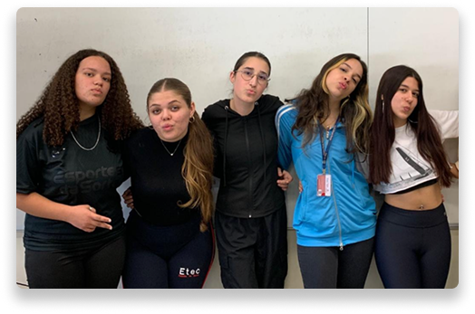

Equipe AABBC
Por trás de cada conteúdo existe uma equipe de estudantes dedicada a transformar ideias em projetos que informam, inspiram e conectam pessoas. A equipe AABBC reúne criatividade, comprometimento e diferentes habilidades para desenvolver iniciativas que valorizam o conhecimento, a cultura e a comunicação. Cada integrante contribui com sua visão e talento, tornando possível a construção de experiências significativas e inovadoras.
"Grandes ideias nascem quando diferentes talentos trabalham juntos."
— Equipe AABBC

Mais do que um projeto acadêmico, o O Sulista representa uma oportunidade de aprendizado, colaboração e desenvolvimento de habilidades ligadas à comunicação, pesquisa e produção de conteúdo. Nossa proposta é criar um espaço onde diferentes vozes, perspectivas e histórias possam ser compartilhadas, promovendo conhecimento e aproximando os leitores da riqueza cultural e social da região
Desenvolvido com dedicação por estudantes da ETEC de Taboão da Serra, o projeto une educação, criatividade e tecnologia para transformar informação em uma experiência envolvente e significativa.
Conheça Nossa Equipe
Ana Luíza Machado
Ana Luiza Marchiori
Bárbara Gonçalves
Beatriz Gagliano
Caroline Fantinate
Acreditamos que a informação tem o poder de conectar pessoas, preservar culturas e inspirar novas perspectivas. Seja bem-vindo ao O Sulista e faça parte desta jornada de conhecimento e descobertas.